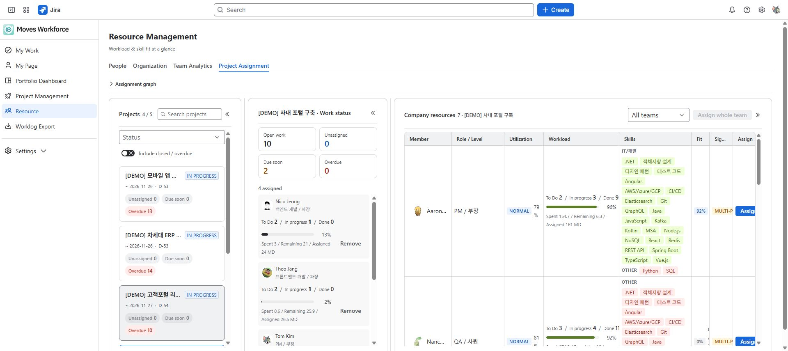

검토 초안: 2026-10-04 지정된 staging의 영어 화면을 촬영했습니다. 화면 이미지는 한·영 가이드가 공통으로 사용합니다. 배포 버전과 역할별 접근·저장 동작은 아직 검증 중입니다.
자원 관리에서 사람의 부하·보유 스킬·조직 소속을 비교하고 프로젝트에 배정합니다. 이름이 같은 권한 세트라도 수정된 설정에 따라 열람 범위가 달라질 수 있습니다.
자원관리 읽기로 인력 현황을 보고, 편집·배정에는 해당 쓰기 권한이 필요합니다. Jira 담당자 지정에는 Jira 권한도 요구됩니다. 팀·인력 열람 범위는 관리 권한, 프로젝트 범위, 팀장 관계에 따라 결정되며 메뉴가 보인다고 전사 명부 전체를 볼 수 있는 것은 아닙니다.
구체적인 전체·리딩 팀·열람 없음 조건은 권한과 데이터 조회 범위의 조직 범위 표를 확인하세요.
가동률은 집계 결과여서 방금 입력한 기록이 바로 반영되지 않을 수 있습니다. 실적 없음과 여유 인력도 구분합니다. 여러 사람이 참여한 이슈의 남은 작업량을 나눈 내 몫은 실제 업무 분담과 다른 근사치일 수 있습니다.

프로젝트 배정 화면에서 프로젝트와 인력 후보의 스킬 적합도·부하를 함께 확인합니다.
후보 인력의 작업 선택 창. All 보기에서 작업을 확인하고 협업자 추가와 담당자 지정을 구분합니다.
스킬 적합도는 등록된 정보의 일치 정도입니다. 실제 숙련도나 가용 시간을 자동 보증하지 않습니다. 후보가 없으면 관리자 인력 등록과 허용된 범위를 확인하세요.
자원 관리는 People·Organization·Team Analytics·Project Assignment를 제공합니다. 화면 명칭이 전사여도 실제 열람 범위는 현재 권한·팀장 범위에 따라 좁혀집니다.
| 버튼·입력 항목 | 기능·사용 조건·변경 대상 | 결과 확인과 문제 대응 |
|---|---|---|
| People·Organization·Team Analytics·Project Assignment | 개인 부하·조직 소속·팀 집계·프로젝트 배정 목적에 따라 탭을 바꿉니다. | 보이는 후보·상세·관계도 모두 허용 범위를 확인합니다. 읽기·쓰기와 REPORT·비용은 별도입니다. |
| 집계 시각·가동률 없음 | 가동률 등 일부 값은 집계 결과입니다. 데이터 없음은 0%와 다릅니다. | 마지막 집계·신선도와 원본 기록을 확인합니다. 모든 자원 수치를 프로젝트 내부 가동률과 동일하다고 보지 않습니다. |